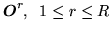
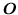

In this style of model training, a set of training observations
 is used to estimate the
parameters of a single HMM by iteratively computing Viterbi alignments.
When used to initialise a new HMM, the Viterbi segmentation is
replaced by a uniform segmentation (i.e. each training
observation is divided into  equal segments)
for the first iteration.
equal segments)
for the first iteration.
Apart from the first iteration on a new model, each training sequence  is segmented using a state alignment procedure which results from maximising
If  represents the total number of transitions from state
represents the total number of transitions from state  to state
to state  in performing the above maximisations, then the transition probabilities can
be estimated from the relative frequencies
in performing the above maximisations, then the transition probabilities can
be estimated from the relative frequencies
The sequence of states which maximises implies an alignment of training data observations with states. Within each state, a further alignment of observations to mixture components is made. The tool HINIT provides two mechanisms for this: for each state and each stream
The means and variances are then estimated via simple averages

Finally, the mixture weights are based on the number of observations allocated to each component